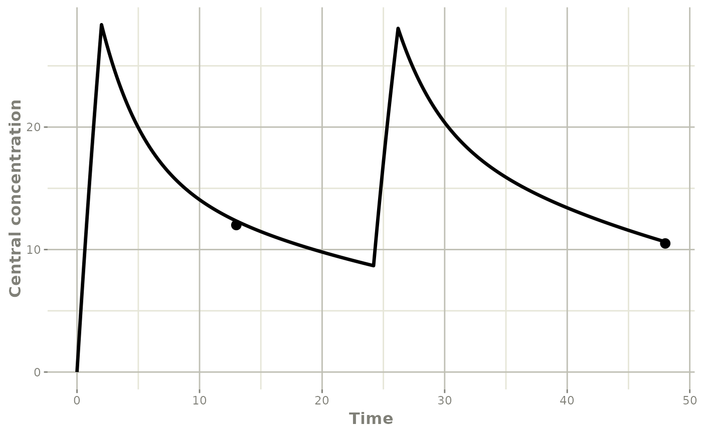
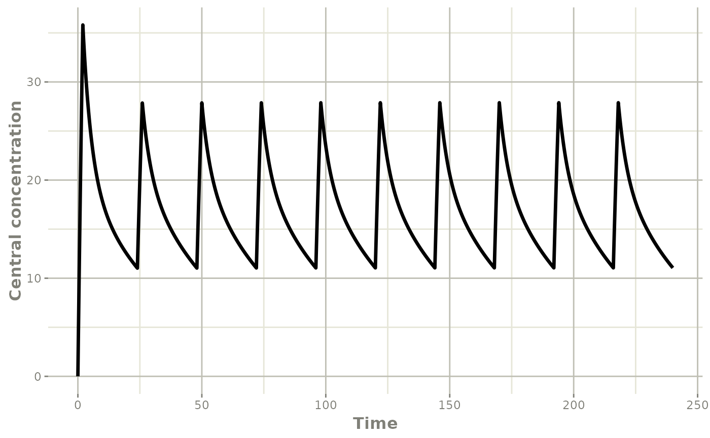
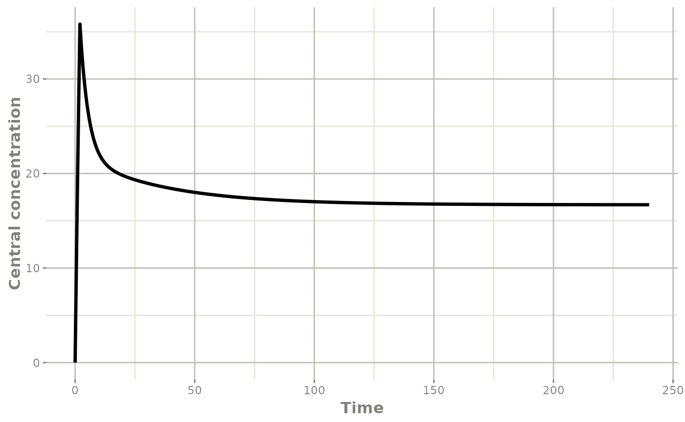

vignettes/case_study_vancomycin.Rmd
case_study_vancomycin.RmdThis case study presents the dosage adjustment for a patient treated
with vancomycin for methicillin-resistant Staphylococcus aureus blood
stream infection, using the population pharmacokinetic (ppk) model of
Goti et al. mod_vancomycin_2cpt_Goti2018.
mod_vancomycin_2cpt_Goti2018 <- list(
ppk_model = rxode2::rxode({
centr(0) = 0;
TVCl = THETA_Cl*(CLCREAT/120)^0.8*(0.7^DIAL);
TVVc = THETA_Vc*(WT/70) *(0.5^DIAL);
TVVp = THETA_Vp;
TVQ = THETA_Q;
Cl = TVCl*exp(ETA_Cl);
Vc = TVVc*exp(ETA_Vc);
Vp = TVVp*exp(ETA_Vp);
Q = TVQ;
ke = Cl/Vc;
k12 = Q/Vc;
k21 = Q/Vp;
Cc = centr/Vc;
d/dt(centr) = - ke*centr - k12*centr + k21*periph;
d/dt(periph) = + k12*centr - k21*periph;
d/dt(AUC) = Cc;
}),
error_model = function(f,sigma){
g <- sigma[1] + sigma[2]*f
return(g)
},
theta = c(THETA_Cl=4.5, THETA_Vc=58.4, THETA_Vp=38.4,THETA_Q=6.5),
omega = lotri::lotri({ETA_Cl + ETA_Vc + ETA_Vp + ETA_Q ~
c(0.147,
0 , 0.510,
0 , 0, 0.282,
0 , 0, 0, 0)}),
covariates = c("CLCREAT","WT","DIAL"),
sigma = c(additive_a = 3.4, proportional_b = 0.227))The dosage individualized using the results of therapeutic drug
monitoring (TDM). See vignette("patient_data_input") for
more details regarding the patient records.
df_patientB_tdm <- data.frame(ID=1,TIME=c(0.0,13.0,24.2,48),
DV=c(NA,12,NA,10.5),
AMT=c(2000,0,1400,0),
DUR=c(2,NA,2,NA),
EVID=c(1,0,1,0),
CLCREAT=65,WT=70,DIAL=0)
df_patientB_tdm
#> ID TIME DV AMT DUR EVID CLCREAT WT DIAL
#> 1 1 0.0 NA 2000 2 1 65 70 0
#> 2 1 13.0 12.0 0 NA 0 65 70 0
#> 3 1 24.2 NA 1400 2 1 65 70 0
#> 4 1 48.0 10.5 0 NA 0 65 70 0
patB_map <- poso_estim_map(dat=df_patientB_tdm,
prior_model=mod_vancomycin_2cpt_Goti2018)
patB_map
#> $eta
#> ETA_Cl ETA_Vc ETA_Vp ETA_Q
#> 0.10796048 0.04652900 0.06865698 0.00000000
#>
#> $model
#> ── Solved rxode2 object ──
#> ── Parameters ($params): ──
#> THETA_Cl THETA_Vc THETA_Vp THETA_Q ETA_Cl ETA_Vc
#> 4.50000000 58.40000000 38.40000000 6.50000000 0.10796048 0.04652900
#> ETA_Vp
#> 0.06865698
#> ── Initial Conditions ($inits): ──
#> centr periph AUC
#> 0 0 0
#> ── First part of data (object): ──
#> # A tibble: 491 × 19
#> time TVCl TVVc TVVp TVQ Cl Vc Vp Q ke k12 k21 Cc
#> <dbl> <dbl> <dbl> <dbl> <dbl> <dbl> <dbl> <dbl> <dbl> <dbl> <dbl> <dbl> <dbl>
#> 1 0 2.76 58.4 38.4 6.5 3.07 61.2 41.1 6.5 0.0502 0.106 0.158 0
#> 2 0.1 2.76 58.4 38.4 6.5 3.07 61.2 41.1 6.5 0.0502 0.106 0.158 1.62
#> 3 0.2 2.76 58.4 38.4 6.5 3.07 61.2 41.1 6.5 0.0502 0.106 0.158 3.22
#> 4 0.3 2.76 58.4 38.4 6.5 3.07 61.2 41.1 6.5 0.0502 0.106 0.158 4.79
#> 5 0.4 2.76 58.4 38.4 6.5 3.07 61.2 41.1 6.5 0.0502 0.106 0.158 6.34
#> 6 0.5 2.76 58.4 38.4 6.5 3.07 61.2 41.1 6.5 0.0502 0.106 0.158 7.87
#> # … with 485 more rows, and 6 more variables: centr <dbl>, periph <dbl>,
#> # AUC <dbl>, CLCREAT <dbl>, WT <dbl>, DIAL <dbl>The individual pharmacokinetic profile is plotted using the rxode
model provided by the poso_estim_map() function.
#Get the observations from the patient record
indiv_obs <- df_patientB_tdm[,c("DV","TIME")]
names(indiv_obs) <- c("value","time")
#Overlay the MAP profile and the observations
plot(patB_map$model,Cc) +
ggplot2::ylab("Central concentration") +
ggplot2::geom_point(data=indiv_obs, size= 3, na.rm=TRUE)
Considering a MIC of 1 mg/L, the target AUC over 24 hours (AUC24) is 400 mg.h/L.
map_model_patB <- patB_map$model
#AUC 0_24
AUC_map_first_dose <- map_model_patB$AUC[which(map_model_patB$time == 24)]
AUC_map_first_dose
#> [1] 336.4356
#AUC 24_48
AUC_map_second_dose <- map_model_patB$AUC[which(map_model_patB$time == 48)] - AUC_map_first_dose
AUC_map_second_dose
#> [1] 387.1363The current dosage does not meet the target AUC.
The maintenance dose needed to achieve an AUC24 of 400 mg.h/L is
estimated by simulating a multiple dose regimen over enough
administrations (11 consecutive administrations, with
add_dose=10) to approximate the steady-state.
maintenance_dose_map <- poso_dose_auc(dat=df_patientB_tdm,
prior_model=mod_vancomycin_2cpt_Goti2018,
time_auc=24,
starting_time=24*9,
interdose_interval=24,
add_dose=10,
duration=2,
target_auc=400)$dose
maintenance_dose_map
#> [1] 1229.365The ideal loading dose achieves the target steady-state concentration on the first administration. By simulating the administration of the maintenance dose to steady state, the Cmin at steady state can be determined.
#event table: multiple dose regimen until steady state
et_ss <- rxode2::et(amt=maintenance_dose_map,dur=2,ii=24,until=240)
et_ss$add.sampling(seq(0,240,by=0.1))
#Simulate with the event table and the individual MAP parameters
map_optim_model_patB <- rxode2::rxSolve(object=mod_vancomycin_2cpt_Goti2018$ppk_model,
params=cbind(patB_map$model$params,
CLCREAT=65,
WT=70,
DIAL=0),
events=et_ss)
#Cmin at steady-state
target_cmin_ss <- map_optim_model_patB$Cc[which(map_optim_model_patB$time == 24*9)]
target_cmin_ss
#> [1] 11.02488The dose needed to achieve the steady-state Cmin following the first administration can now be identified.
loading_dose_map <- poso_dose_conc(dat=df_patientB_tdm,
prior_model=mod_vancomycin_2cpt_Goti2018,
time_c=24,
duration=2,
target_conc=target_cmin_ss)$dose
loading_dose_map
#> [1] 2525.159
#event table: loading dose followed by maintenance dose once daily
et_load <- rxode2::et(amt=loading_dose_map,dur=2)
et_maint <- rxode2::et(amt=maintenance_dose_map,dur=2,ii=24,until=240)
et_optim_dosage <- seq(et_load,et_maint) %>% rxode2::et(seq(0,240,by=0.1))
#Simulate with the event table and the individual MAP parameters
map_optim_model_patB <- rxode2::rxSolve(object=mod_vancomycin_2cpt_Goti2018$ppk_model,
params=cbind(patB_map$model$params,
CLCREAT=65,
WT=70,
DIAL=0),
events=et_optim_dosage)
#Plot the results of the simulation
plot(map_optim_model_patB,Cc) +
ggplot2::ylab("Central concentration")
#AUC 0_24
AUC_loading_dose <- map_optim_model_patB$AUC[which(map_optim_model_patB$time == 24)]
AUC_loading_dose
#> [1] 424.7766
#AUC 24_48
AUC_maintenance_dose <- map_optim_model_patB$AUC[which(map_optim_model_patB$time == 48)] -
AUC_loading_dose
AUC_maintenance_dose
#> [1] 399.7954The target AUC24 are now met.
The maintenance dose for a continuous intravenous infusion can be
determined by setting the duration of the infusion equal to
the interdose_interval.
#Target Css for a continuous infusion
target_css <- 400/24
maintenance_dose_map_ci <- poso_dose_conc(dat=df_patientB_tdm,
prior_model=mod_vancomycin_2cpt_Goti2018,
time_c=24*9.9,
interdose_interval=24,
add_dose=10,
duration=24,
target_conc=target_css)$dose
maintenance_dose_map_ci
#> [1] 1229.425
#event table: loading dose followed by continuous infusion
et_ci <- rxode2::et(time=2,
amt=maintenance_dose_map_ci,
dur=24,
ii=24,
until=240)
et_ci$add.dosing(dose=loading_dose_map,dur=2)
et_ci$add.sampling(seq(0,240,by=0.1))
#Simulate with the event table and the individual MAP parameters
map_optim_model_patB_ci <- rxode2::rxSolve(object=mod_vancomycin_2cpt_Goti2018$ppk_model,
params=cbind(patB_map$model$params,
CLCREAT=65,
WT=70,
DIAL=0),
events=et_ci)
#Plot the results of the simulation
plot(map_optim_model_patB_ci,Cc) +
ggplot2::ylab("Central concentration")